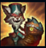
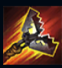
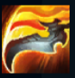
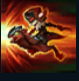
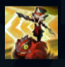

Kled
| Kled The Cantankerous Cavaliers | |
|---|---|
| Release date | 10.08.2016 |
| Class | Skirmisher |
| Positions | Jungle, Top |
| Resource | Courage |
| Range type | Melee |
| Adaptive type | Physical |
| Base statistics | |||
| Health | 740 – 2950 | Resource | N/A |
| Health regen. | 6 – 18.75 |
Secondary Bar | Courage (100) |
| Armor | 35 – 103 | Attack damage | 65 – 124.5 |
| Magic resist. | 28 – 49.25 | Crit. damage | 175% |
| Move. speed | 345 | Attack range | 125 |
Pe cât de neînfricat, pe atât de cârcotaș, Kled este un yordle care dă dovadă de toată bravada furioasă a Noxusului. Este un personaj îndrăgit de soldați, dar privit cu scepticism de ofițeri și detestat de nobilime. Mulți susțin că a luptat în toate războaiele purtate de Noxus vreodată, că a ''adunat'' toate titlurile și onorurile militare posibile și că nu s-a retras niciodată din luptă. Deși multe dintre poveștile spuse despre el par mai degrabă legende decât adevăruri, există totuși un lucru de netăgăduit: alături de Skaarl, șopârla sa fricoasă, Kled luptă pentru a apăra ce-i al lui și a-și însuși ce-i al altora. |  |
SKAARL, ȘOPÂRLA SPERIOASĂ Kled călărește pe șopârla lui de încredere, Skaarl, care suferă daune în locul său. Dacă viața lui Skaarl ajunge la zero, Kled descalecă. Când Kled merge pe jos, provoacă mai puține daune împotriva campionilor, iar abilitățile lui se schimbă. Kled îi poate reda curajul lui Skaarl dacă își atacă inamicii. La nivelul maxim de ''curaj'', Skaarl se întoarce cu un procent din viață, iar Kled încalecă din nou. |
||
|---|---|---|---|---|
 |
LASOU CU DINȚI Kled aruncă o capcană de urși care îi provoacă daune unui campion inamic și se atașează de el. Dacă ținta rămâne prinsă pe o perioadă scurtă, suferă daune fizice suplimentare și este trasă spre Kled. Când Kled este pe jos, această abilitate este înlocuită de ''Pistolet'', o rafală de gloanțe care îl propulsează în spate și îi redă curaj lui Skaarl. |
|||
 |
APUCĂTURI VIOLENTE Viteza de atac a lui Kled crește masiv timp de patru atacuri. Cel de-al patrulea atac provoacă mai multe daune. |
|||
|  |
LA TURNIR Kled se năpustește, provoacă daune fizice și primește un scurt bonus de viteză. Apoi, poate refolosi abilitatea pentru a se năpusti din nou prin ținta inițială, provocându-i aceleași daune. |
|||
 |
ÎNAINTEEEE!!! Kled și Skaarl se năpustesc către o locație-țintă, primesc un scut și le oferă aliaților din spatele lor un bonus la viteza de mișcare. Skaarl țintește primul inamic întâlnit și îl izbește. |